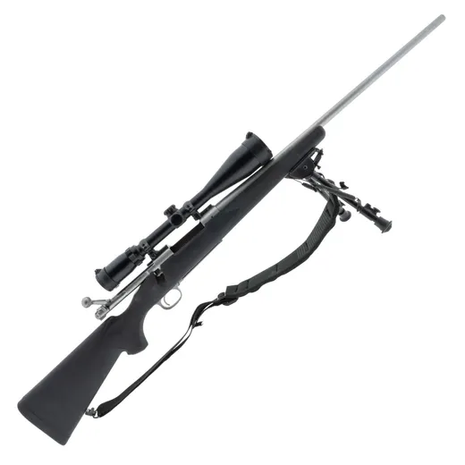
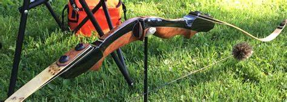

Laden
Welkom bij Schietsportvereniging De Prins der Nederlanden in Vaassen. Maak onder begeleiding kennis met lucht, boog en andere schietsportdisciplines in een veilige en gezellige verenigingsomgeving.
Klik op een discipline voor meer foto’s, betere uitleg en praktische informatie over starten bij De Prins der Nederlanden.

Een toegankelijke discipline waarbij concentratie, houding en techniek samenkomen. Je kunt starten met verenigingsmateriaal op de eigen boogbaan.
Bekijk boogschieten →

Precies, gecontroleerd en geschikt om techniek goed op te bouwen. Ervaren leden helpen beginners stap voor stap op weg.
Bekijk luchtdruk →

Voor leden die onder begeleiding en volgens de geldende regels verder willen met gereglementeerde onderdelen, waaronder klein kaliber.
Bekijk vuurwapen disciplines →
Nieuwe berichten die via beheer worden toegevoegd, verschijnen hier automatisch.
Bij de vereniging draait het om veiligheid, begeleiding, variatie en saamhorigheid.

Nieuwe leden en aspiranten schieten onder begeleiding. Er is altijd een baancommandant aanwezig.

Je kunt op je eigen niveau trainen, leren van ervaren leden en onderdeel worden van een actieve club.

Ook kinderfeestjes, bedrijfsactiviteiten en familieactiviteiten zijn mogelijk, afhankelijk van vrijwilligers en beschikbaarheid.
De ingang van de boogbaan is de eerste deur. Voor de kantine/bar gebruikt u de tweede deur en belt u even aan.